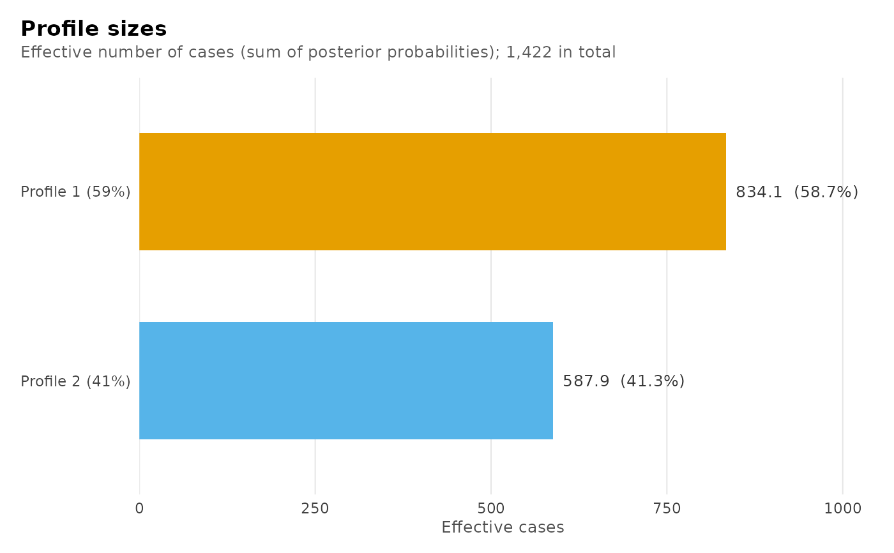
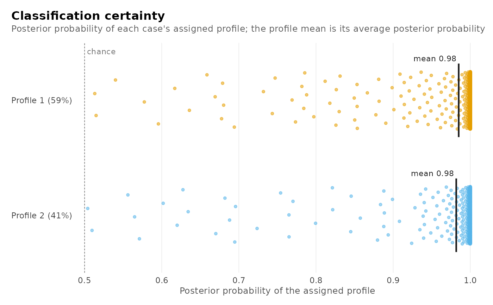
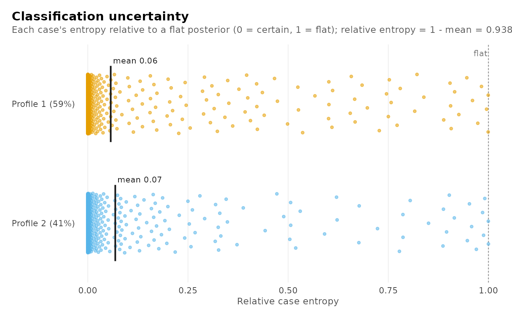
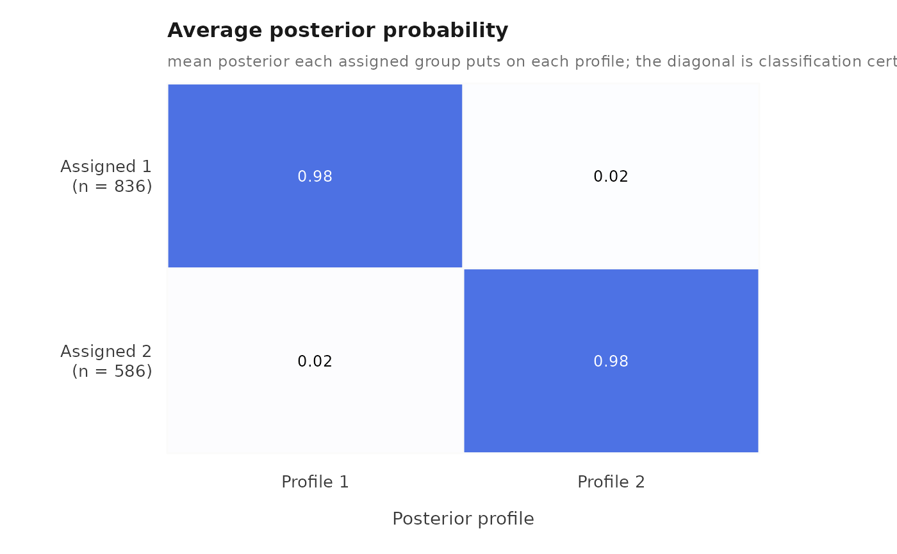
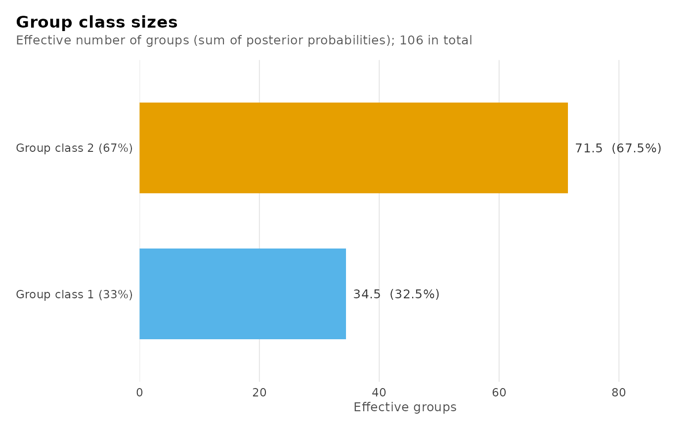
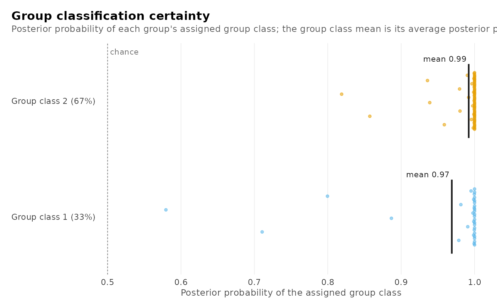
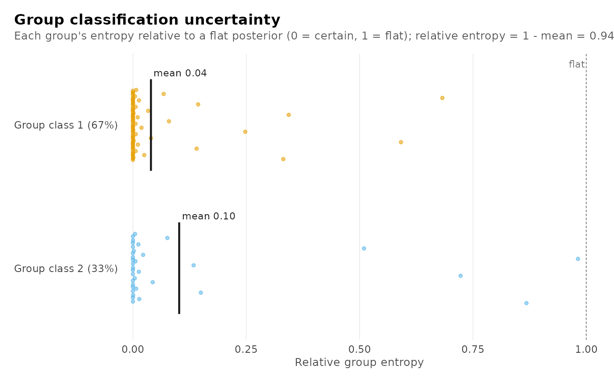
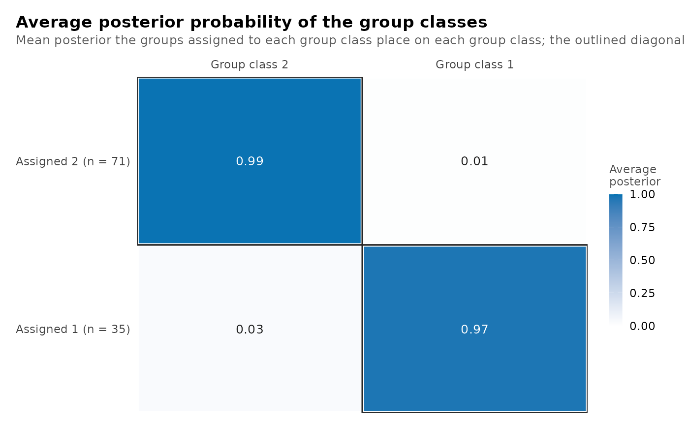

diagnostics() examines the estimation and interpretation of a fitted
mixture model. It assesses convergence and replication across starting
values, describes the size and separation of the latent classes, and,
where supported, examines associations between indicators that are not
adequately represented by the model.
Convergence and likelihood replication indicate whether different starting values lead to the same numerical solution. Class sizes and posterior membership probabilities describe how observations are distributed across classes and how uncertain their classification remains. Bivariate residuals compare observed indicator associations with those implied by the fitted model, helping identify departures from the measurement specification.
The function brings these results together in diagnostic tables and, where available, classification plots. For multilevel models, classification summaries distinguish observation-level profiles from group-level classes. Conditions such as incomplete convergence, estimates at parameter bounds, and classes with no assigned observations are identified for further examination.
Usage
diagnostics(x, data = NULL, plots = TRUE, by = c("profile", "overall"), ...)Arguments
- x
A fitted model of this package.
- data
Optional data frame used to fit the model. When omitted, the required columns are reconstructed from the fitted object.
- plots
TRUE(the default) draws classification plots for model families that support them: effective profile sizes, posterior probabilities of assigned profiles, case entropy, and the average posterior probability matrix. If ggplot2 is unavailable or the model family has no classification plots, a message is issued and the tables are returned without plots.FALSEreturns only the tables.- by
"profile"(the default) assesses each profile's bivariate residuals separately;"overall"pools them. This argument is forwarded to the residual calculations. The classification levels are determined by the fitted model.- ...
Not used. For
diagnostics()andplot(), any further argument raiseslatents_bad_argument; style the returned plots with ggplot2.
Value
An object of class multilpa_diagnostics. The checks table,
accessed with get_results(result, "checks"), contains one row per check
and columns domain, check, level, value (numeric), display
(formatted value), criterion, status, detail and reference.
Tables are accessed with get_results(), using what = "checks", "entropy",
"classification", "average_posteriors", "residuals",
"replication" or "all". A
model family without bivariate residuals leaves that table out of
"all", and asking for it by name raises latents_no_group_classes; a
fit with a noise component has none either, and raises
latents_unsupported_noise.
print() groups checks by domain, highlights those requiring review and
returns the object invisibly. For supported model families, plot()
returns four classification plots as a latents_plots list of ggplot
objects; printing the list draws
all four plots. as.data.frame() returns the entropy table. summary()
returns the diagnostics object.
Details
Estimation: convergence of the selected solution; replication of the best log likelihood across completed starts (Masyn, 2013); failed or unfinished starts; and estimates at parameter bounds. Preliminary screening starts are reported separately from full optimisation runs.
Class size, at each level the fit classifies: the smallest class, the largest gap between modal and model-estimated class proportions, and classes to which no unit is assigned.
Classification: relative entropy (Ramaswamy et al., 1993), which describes classification precision and is not a criterion for the number of classes (Clark & Muthen, 2009); the lowest average posterior probability of the assigned class and the lowest odds of correct classification (Nagin, 2005).
Bivariate residuals: discrepancies between observed and model-implied indicator associations, reported under the
"Local independence"domain. Where tests are available, pairs are flagged at 0.05 after Benjamini-Hochberg adjustment (Vermunt & Magidson, 2005). Residuals without an available test are reported descriptively.Information: log likelihood, number of parameters and BIC, for comparison with other fitted models using
compare_models().
The status labels are "fail" for a non-converged selected solution or a
class with effective membership below one; "check" for conditions requiring
review, including failed or unfinished starts, active parameter bounds,
classes with no modal assignments or residual indicator dependence; "ok"
when the checked condition is absent; "info" for a descriptive quantity;
and "n/a" for an unavailable or inapplicable quantity. An "ok" status
applies only to the specified check and does not establish overall model
adequacy. Classification summaries use the fitted posterior probabilities,
eligible observations and sampling weights. The available diagnostics depend
on the model family.
Entropy, classification and average-posterior tables are supplied at the
classification levels supported by each family, together with a summary of
replication across starts ("replication").
Group-classified regressions report the group level; hierarchical regression
and growth models report both levels. All-empty transition rows follow the
fitted drop_empty policy, and zero-weight units are never classified.
Bivariate residuals are gathered for families that support them.
Interpretation
Numerical convergence, classification separation, and measurement fit address different aspects of a model. A converged solution may contain poorly separated classes, while sharply separated classes may arise under an inadequate measurement specification. The diagnostics should therefore be interpreted jointly, with attention to the study design and the substantive meaning of the estimated classes.
References
Clark, S. L., & Muthen, B. (2009). Relating latent class analysis results to variables not included in the analysis. Unpublished manuscript.
Masyn, K. E. (2013). Latent class analysis and finite mixture modeling. In T. D. Little (Ed.), The Oxford handbook of quantitative methods (Vol. 2, pp. 551-611). Oxford University Press.
Nagin, D. S. (2005). Group-based modeling of development. Harvard University Press.
Ramaswamy, V., DeSarbo, W. S., Reibstein, D. J., & Robinson, W. T. (1993). An empirical pooling approach for estimating marketing mix elasticities with PIMS data. Marketing Science, 12(1), 103-124. doi:10.1287/mksc.12.1.103
Vermunt, J. K., & Magidson, J. (2005). Latent GOLD 4.0 user's guide. Statistical Innovations.
See also
get_results() for these and the other tables, descriptives()
for the variables before fitting, and summary() for the estimates.
Examples
fit <- multilpa(
course_engagement,
vars = c("browse", "lectures", "forum_read", "forum_post", "attendance"),
id = "student", n_profiles = 2, n_group_classes = 2, n_starts = 4,
seed = 1
)
quality <- diagnostics(fit, plots = FALSE)
quality
#> Diagnostics: Two-level latent profile analysis, 2 profiles, 2 group classes
#> 1 check needs attention: pairs dependent within a class
#>
#> Estimation
#> ok best start converged yes
#> info best log likelihood reached by 4 of 4 starts
#> ok starts failed or unfinished 0 of 4
#> ok estimates at a bound no
#>
#> Class size
#> info smallest class individuals 41.3% (n = 588, class 2)
#> info modal vs estimated proportions individuals largest gap 0.001
#> ok classes with no assigned unit individuals 0 of 2
#> info smallest class groups 32.5% (n = 34, class 1)
#> info modal vs estimated proportions groups largest gap 0.005
#> ok classes with no assigned group groups 0 of 2
#>
#> Classification
#> info relative entropy individuals 0.938
#> info lowest average posterior individuals 0.982 (class 2)
#> info lowest odds of correct classification individuals 46.1 (class 1)
#> info relative entropy groups 0.940
#> info lowest average posterior groups 0.969 (class 1)
#> info lowest odds of correct classification groups 59.9 (class 2)
#>
#> Local independence
#> check pairs dependent within a class 9 of 20 tested pairs BH-adjusted p < 0.05
#> largest: lectures x attendance in profile_1, residual 0.234, adjusted p <1e-04; consider local_dependence = or a full covariance model
#>
#> Information
#> info log likelihood, parameters, BIC -8439.82, 23, 16986.89
#>
#> Every check with its reference: get_results(x, "checks"). Other tables: get_results(x, what = ).
get_results(quality, "checks")
#> domain check level
#> 1 Estimation best start converged model
#> 2 Estimation best log likelihood reached by model
#> 3 Estimation starts failed or unfinished model
#> 4 Estimation estimates at a bound model
#> 5 Class size smallest class individuals
#> 6 Class size modal vs estimated proportions individuals
#> 7 Class size classes with no assigned unit individuals
#> 8 Class size smallest class groups
#> 9 Class size modal vs estimated proportions groups
#> 10 Class size classes with no assigned group groups
#> 11 Classification relative entropy individuals
#> 12 Classification lowest average posterior individuals
#> 13 Classification lowest odds of correct classification individuals
#> 14 Classification relative entropy groups
#> 15 Classification lowest average posterior groups
#> 16 Classification lowest odds of correct classification groups
#> 17 Local independence pairs dependent within a class model
#> 18 Information log likelihood, parameters, BIC model
#> value display criterion status
#> 1 1.000000e+00 yes ok
#> 2 4.000000e+00 4 of 4 starts info
#> 3 0.000000e+00 0 of 4 ok
#> 4 0.000000e+00 no ok
#> 5 4.134347e-01 41.3% (n = 588, class 2) info
#> 6 1.339085e-03 largest gap 0.001 info
#> 7 0.000000e+00 0 of 2 ok
#> 8 3.252969e-01 32.5% (n = 34, class 1) info
#> 9 4.891823e-03 largest gap 0.005 info
#> 10 0.000000e+00 0 of 2 ok
#> 11 9.381731e-01 0.938 info
#> 12 9.817573e-01 0.982 (class 2) info
#> 13 4.608144e+01 46.1 (class 1) info
#> 14 9.396428e-01 0.940 info
#> 15 9.689851e-01 0.969 (class 1) info
#> 16 5.989189e+01 59.9 (class 2) info
#> 17 9.000000e+00 9 of 20 tested pairs BH-adjusted p < 0.05 check
#> 18 -8.439816e+03 -8439.82, 23, 16986.89 info
#> detail
#> 1
#> 2
#> 3
#> 4
#> 5
#> 6
#> 7
#> 8
#> 9
#> 10
#> 11
#> 12
#> 13
#> 14
#> 15
#> 16
#> 17 largest: lectures x attendance in profile_1, residual 0.234, adjusted p <1e-04; consider local_dependence = or a full covariance model
#> 18 meaningful only against other models: compare_models()
#> reference
#> 1
#> 2 Masyn (2013)
#> 3
#> 4
#> 5
#> 6
#> 7
#> 8
#> 9
#> 10
#> 11 Clark & Muthen (2009); Masyn (2013)
#> 12 Nagin (2005)
#> 13 Nagin (2005)
#> 14 Clark & Muthen (2009); Masyn (2013)
#> 15 Nagin (2005)
#> 16 Nagin (2005)
#> 17 Vermunt & Magidson (2005)
#> 18
get_results(quality, what = "classification")
#> level class n_modal proportion_modal estimated_n estimated_proportion
#> 1 individuals 1 836 0.5879044 834.09582 0.5865653
#> 2 individuals 2 586 0.4120956 587.90418 0.4134347
#> 3 groups 1 35 0.3301887 34.48147 0.3252969
#> 4 groups 2 71 0.6698113 71.51853 0.6747031
#> average_posterior odds_correct_classification
#> 1 0.9849349 46.08144
#> 2 0.9817573 76.35253
#> 3 0.9689851 64.80058
#> 4 0.9920142 59.89189
get_results(diagnostics(fit, by = "overall"), what = "residuals")








#> profile indicator_1 indicator_2 kind observed expected residual
#> 1 overall forum_read attendance gaussian 0.215876298 0 0.215876298
#> 2 overall lectures attendance gaussian 0.192343530 0 0.192343530
#> 3 overall browse attendance gaussian 0.180765953 0 0.180765953
#> 4 overall forum_post attendance gaussian 0.172391962 0 0.172391962
#> 5 overall browse forum_read gaussian 0.062652506 0 0.062652506
#> 6 overall browse forum_post gaussian -0.025110717 0 -0.025110717
#> 7 overall browse lectures gaussian -0.021258470 0 -0.021258470
#> 8 overall forum_read forum_post gaussian 0.019861260 0 0.019861260
#> 9 overall lectures forum_post gaussian 0.017095238 0 0.017095238
#> 10 overall lectures forum_read gaussian 0.001925386 0 0.001925386
#> effective_n statistic df p_value p_adjusted
#> 1 1422 8.26195524 NA 1.433054e-16 1.433054e-16
#> 2 1422 7.33689602 NA 2.186043e-13 2.186043e-13
#> 3 1422 6.88504161 NA 5.777064e-12 5.777064e-12
#> 4 1422 6.55944223 NA 5.400941e-11 5.400941e-11
#> 5 1422 2.36319122 NA 1.811832e-02 1.811832e-02
#> 6 1422 -0.94610998 NA 3.440925e-01 3.440925e-01
#> 7 1422 -0.80091906 NA 4.231785e-01 4.231785e-01
#> 8 1422 0.74826444 NA 4.543007e-01 4.543007e-01
#> 9 1422 0.64403379 NA 5.195535e-01 5.195535e-01
#> 10 1422 0.07252866 NA 9.421812e-01 9.421812e-01